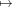

Tentar - Torção Generalizada
February 1, 2025
Seguiremos a notacao dada na nota principal do projeto de Torção Generalizada em Grupos
Nilpotentes-por-Finitos.
- Mergulho Universal: Dado o mergulho universal 𝜃 : G → N ≀ Q, temos que a função
ρ : N ≀ Q → N dada por (f,q)∏
x∈Qf(x) é um homomorfismo caso n = 1, i.e. se
N é abeliano. De fato, temos ainda que τ = ρ ∘ 𝜃 é o transfer de N para G. Sendo um
homomorfismo, podemos concluir usando Resultadostg/?? que z ∈ Z(G)∩γn(N) não-trivial
tem ordem infinita em G∕γn+1G.